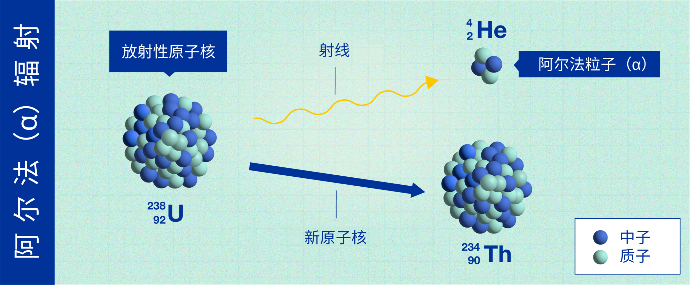
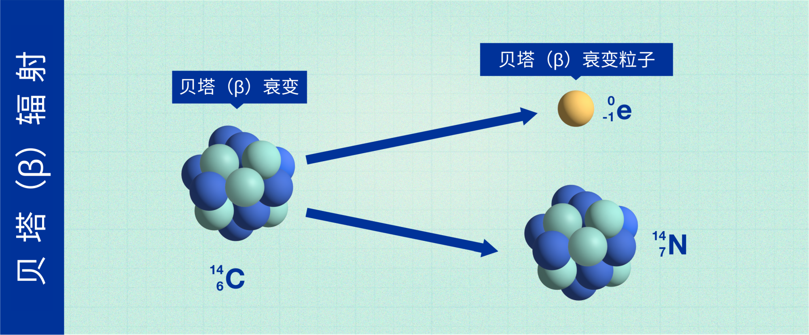
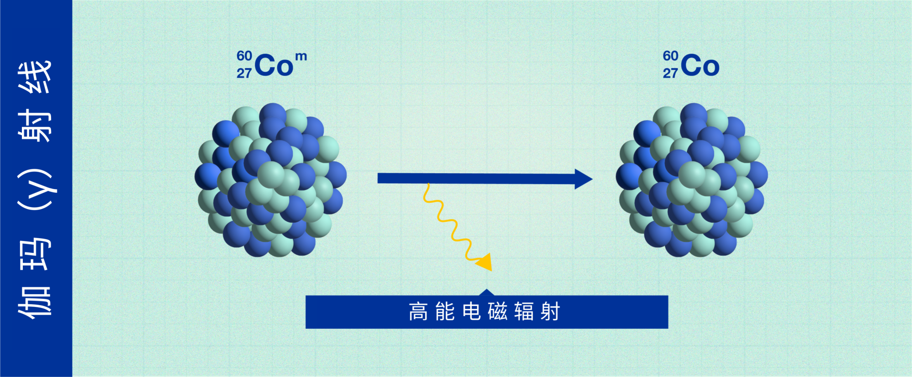
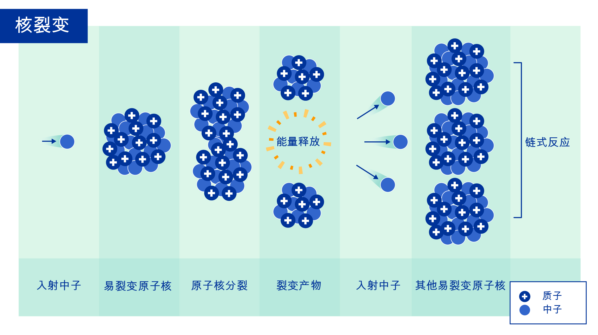
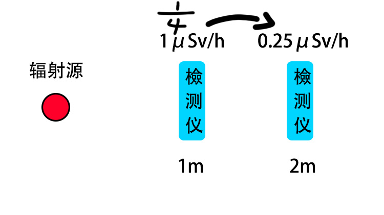
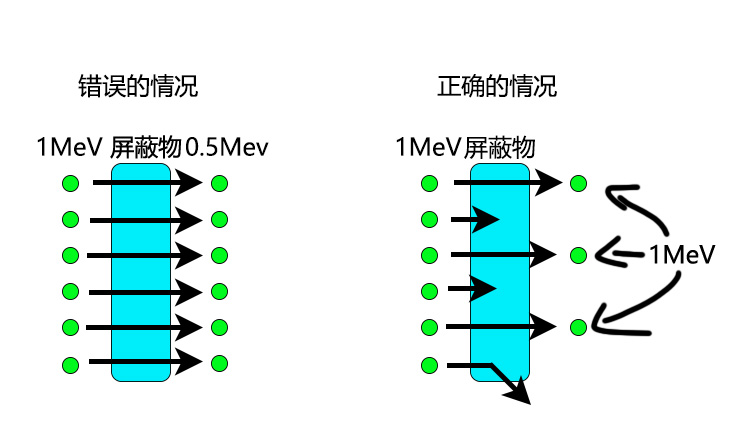

辐射屏蔽
返回关于辐射及辐射测量仪器相关
我们先从最基础的概念来讲，最后我将解释γ射线的衰减
阿尔法（α）辐射

α辐射中，衰变的核子会释放出沉重的、带正电的粒子，以便变得更加稳定。这些粒子不能穿透我们的皮肤造成伤害，而且通过使用一张纸往往就可以阻挡。
然而，如果α辐射材料通过呼吸、饮食进入体内，它们将会直接暴露在人体内部组织中，进而会损害健康。
镅-241就是一个通过释放α粒子而衰变的原子实例，用于世界各地的烟雾探测器。
贝塔（β）辐射

在β辐射中，原子核释放出更小的粒子（电子），其穿透力比α粒子更强，取决于其能量，其可以穿过例如1-2厘米的水。一般来说，几毫米厚的铝板可以阻止β辐射。
能量为0.5 MeV的β粒子大约有1米的射程，其距离取决于粒子能量。其速度可达至光速的99%
β粒子是一种电离辐射，从辐射防护的角度来说，它被认为比γ射线更容易游离，但比α粒子更不易游离。游离性越强，对生物组织的危害更大，穿透力则越低。
备注：β射线穿过皮肤后通常在组织里前进不了多少毫米
伽玛（γ）射线

γ射线有多种用途，属于电磁辐射，类似于可用于癌症治疗的X射线，一些γ射线直接穿过人体而不造成伤害，而另一些则被人体吸收并可能造成损害。
通过由混凝土或铅筑成的厚墙，我们可以将γ射线的强度降低到风险较小的水平。这就是为什么医院里为癌症患者提供的放射治疗室的墙壁如此之厚的原因。
中子

中子是相对较大的粒子，是原子核的主要成分之一，不带电，因此不会直接产生电离。
但中子与物质的原子相互作用可以产生α-、β-、γ-或X射线，然后导致电离。中子具有穿透力，只能被厚厚的混凝土、水或石蜡所阻挡。
中子可以通过多种方式产生，例如在核反应堆中或由加速器光束中的高能粒子引发的核反应中。中子可以代表间接电离辐射的一个重要来源。
备注：中子通常很难遇到非宇宙射线途径
且很难阻挡，铅钨等高密度金属挡不了多少中子.
-------------------------------------------------------------------------------------------------------------------------------------------------------
辐射强度与距离的平方成反比。

如果辐射源是一个理想的点
假设此时这个点是一堆放射性物质
那么这时远离这个点时，辐射强度与距离的平方成反比。
所以在在1 m 处为 1 μSv/h，在 2 m 距离处为 1/4，因此将为 0.25 μSv/h。
反之，如果从1m处接近0.5m，强度的增加与距离的平方成反比，所以4/1就是4倍，4μSv/h。
但是，需要注意的是，这只有在距离达到一定程度的情况下才有效。
比如“1 微米是 1 米的 1/1,000,000，因此剂量高出 1 万亿倍”，这是不正确的。
辐射强度与距离的平方成反比变化的原因是，由于辐射从辐射源向各个方向辐射，因此照射到物体上的辐射量根据距离而变化。
如果距离增加一倍，从辐射源看到的物体的长度和宽度将减半，因此面积为1/4。
由于从各个方向发出的辐射偶然击中物体的概率也是1/4，所以辐射的强度也将是1/4。
反之，随着物体越来越近，从辐射源看物体越来越大，所以剂量也相应增加。
但是，无论距离多近，辐射源发出的辐射量都不会增加。
如果在距辐射源 1m 处有一个 10cm x 10cm 的物体，大约有 0.08% 的发射辐射会击中它。
如果做成0.5m，会是0.32%的4倍，但是即使再靠近，再靠近辐射源，所有的辐射都是在目标所在的那一侧发出的，所以剂量将高达 50%
如果将它带入体内，它会向身体的任何方向撞击，所以它是 100%，但即使那样，它也只是最大值的 100/0.08 = 1250 倍。
这也是为什么内照射非常Bad的原因
但这也是理想情况 大部分情况遇到的辐射源都不是一个点
上面说了，伽马射线会根据距离衰减。即在空气中会衰减.
但是如果用铅等屏蔽，衰减会更大。但是能量是不变的.
例如，如果辐射衰减到1/2，则辐射强度将是1/2，因此剂量率的值将减半。然而，此时的辐射能量仍保持原来的大小。
看起来辐射的能量（MeV）就是强度，但能量是不变的，而且不随辐射发出时的能量而变化
在屏蔽放射线的情况下，通过光子的数量会发生变化。
如下图所示
假设1 MeV能量辐射在屏蔽物处衰减一半时，辐射的能量并没有减少，而是能通过障碍物的辐射数量减半。
